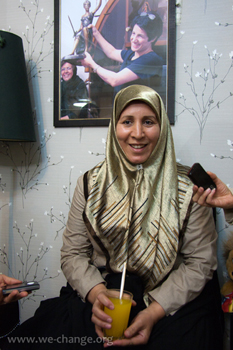
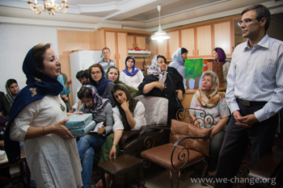
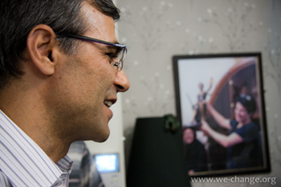
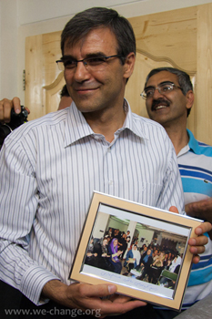
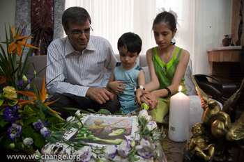
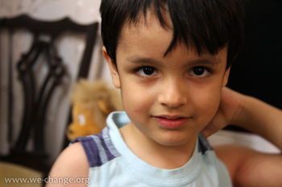
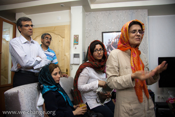
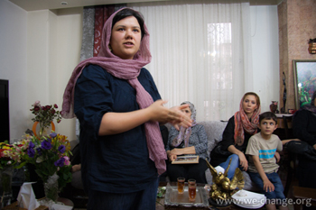
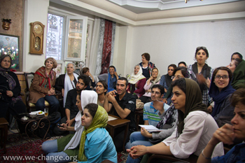

|
|
|
Browsing
Contact Us |
Campaigners |
Face to Face |
Tribune |
Interview |
News |
On the Web |
One Million |
Report
Farsi | Français | German | Italian | Spanish | العربية Also in this section
|

Activists Celebrate Birthdays of Nasrin Sotoudeh & Abdollah Momeni in Their AbsenceWednesday 1 June 2011 Change For Equality: On Monday May 30th, on the occasion of the birthdays of incarcerated human rights lawyer Nasrin Sotoudeh and incarcerated student leader and pro democracy activist Abollah Momeni [also long time spokesperson for Alumni Association of Iran, Advar-e Tahkim Vahdat) a number of women’s rights activists including activists from the One Million Signature Campaign, Mothers for Peace and the Mothers of Laleh Park [Mourning Mothers of Iran] and members of the Iranian Bar Association met with Sotoudeh and Momeni’s families to commemorate their birthday.
 It has been reported that during this celebration, Abdollah Momeni’s wife, Fatemeh Adineh-Vand informed those present of her recent visit with her husband stating: "With flowers and a birthday cake in hand, we visited with Mr. Momeni today, Monday May 30th, on the occasion of his birthday. He asked that we hide the flowers so that no one in prison would realize that it was his birthday. Abdollah insisted that I attend this commemoration today in order to congratulate Mrs. Sotoudeh’s family in person and express his hope that next year we will all celebrate this day together."
 While stressing the importance of such heartwarming meetings for the families of political prisoners, Mrs. Sotoudeh’s family expressed their continued hope for her immediate release from prison. Mousa Khandan stated: "Those who are in prison look to their friends for support and spiritual strength. It is the spirit of each and every one of her friends and supporters that fuels Nasrin’s patience and strengthens her resolve."
 Reza Khandan, Sotoudeh’s husband discussed her recent trial at the Iranian Bar Association and said: "The trial has been postponed and will resumed once Sotoudeh and her lawyers have been provided with the necessary court documents and have had the opportunity to review the details of the case." Reza Khandan’s mother who has been at his side supporting him and the children during these difficult past few months also expressed hope that Nasrin would return home as soon as possible. Despite their absence, there was much talk in this intimate gathering regarding the relentless efforts by these two hard working civil activists and the participants honored Sotoudeh and Momeni by recounting personal experiences of their activism. The visit ended with Nima and Mehraveh, Nasrin Sotoudeh’s children cutting her birthday cake. Translation by: Banooye Sabz





 |